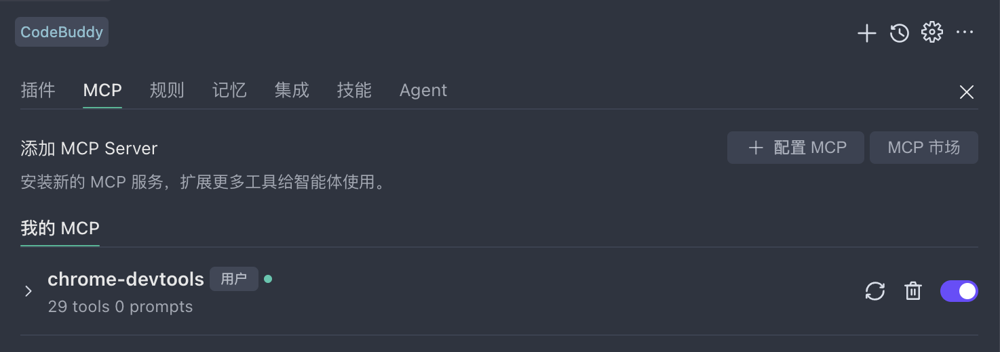
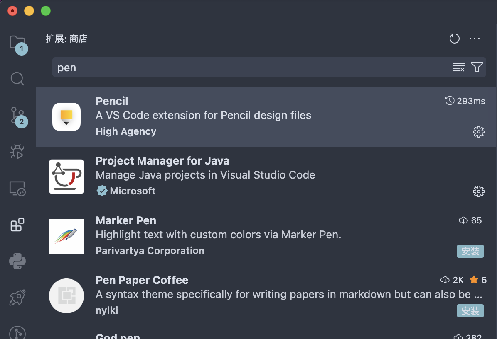
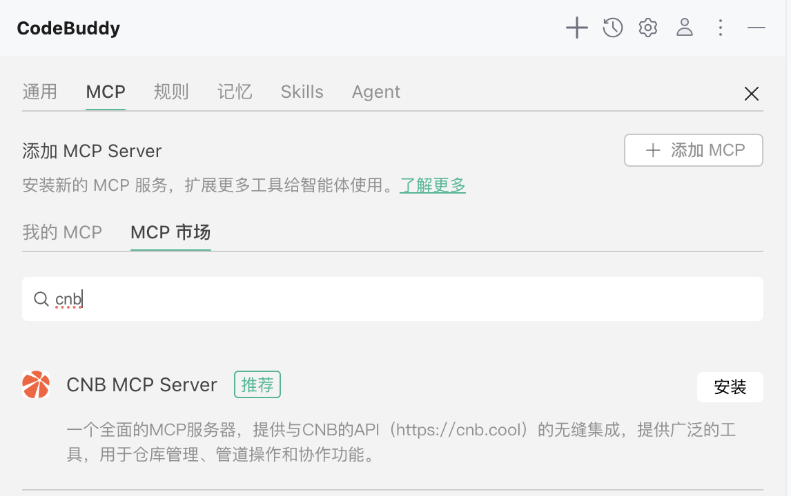
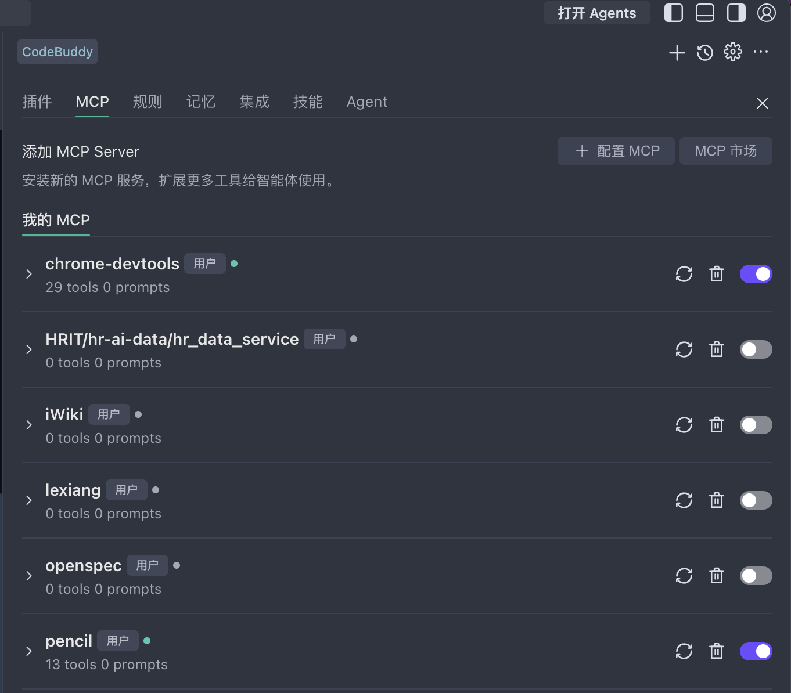

配置 MCP 3-5 分钟
什么是 MCP？
MCP（Model Context Protocol，模型上下文协议）是一种标准化协议，让 AI 能够接入外部工具和数据源，例如数据库查询、API 调用、文件系统操作等，大大扩展 AI 的能力边界。
Chrome DevTools（页面调试 / 截图 / 网络分析）和 Pencil（UI 原型绘制）。请先按下面步骤安装这 2 个 MCP。
案例所需的 MCP
依次安装以下 MCP Server。
1. Chrome DevTools — 浏览器调试 MCP
手动 JSON 配置（Add MCP → 填入下方内容）：
{ "chrome-devtools": { "command": "npx", "args": ["-y", "chrome-devtools-mcp@latest"], "disabled": false } }
验证：打开 CodeBuddy Settings → MCP 标签页，在已启用的 MCP Server 列表中看到 chrome-devtools 且状态正常，即表示安装成功。

Chrome DevTools MCP 让 AI 直接操作本机 Chrome：打开页面、点击元素、审查 DOM、抓取网络请求、性能分析、控制台日志。前提是本机已安装 Chrome 浏览器。
页面截图
全页 / 视口 / 元素级截图
DOM 操作
点击、输入、等待元素
网络抓包
监听请求、响应、耗时
性能分析
Performance / Lighthouse
2. Pencil — UI 原型与设计 MCP
打开 CodeBuddy 左侧 Extensions（扩展）面板 → 搜索 pencil → 找到 HighAgency · Pencil → 点击安装。安装完成后建议重启一次 CodeBuddy。

打开 CodeBuddy Settings → MCP → Add MCP，粘贴以下 JSON。注意把 command 中的路径替换为你本机实际的 Pencil 插件安装路径。
{ "pencil": { "name": "pencil", "transport": "stdio", "command": "<用户目录>/.codebuddycn/extensions/highagency.pencildev-<版本号>/out/mcp-server-<平台>-<架构>", "args": ["--app", "codebuddy_cn"], "env": {}, "disabled": false } }
💡 macOS ARM64 示例路径：/Users/你的用户名/.codebuddycn/extensions/highagency.pencildev-0.6.44/out/mcp-server-darwin-arm64。版本号会随插件升级变化，建议到扩展目录下 ls 一下确认实际名称。
点击 Pencil MCP 右侧 Try to Run，状态变为 Running 即成功；在 Craft Agent 中让 AI "画一个登录页原型"即可看到 Pencil 画布响应。
Pencil 是 CodeBuddy 生态的 UI 原型 / 设计协作工具。接入 MCP 后，AI 可以直接在 Pencil 画布上绘制线框图、生成组件、调整布局，全栈开发案例中的界面设计环节会用到。
线框原型
AI 自动生成低保真原型
组件生成
按钮、表单、卡片一键生成
布局调整
栅格对齐、尺寸微调
迭代修改
自然语言指令反复打磨
更多
阅读更多：通用配置参考
方式一：MCP Market 一键安装（推荐）
点击侧栏右上方 CodeBuddy Settings → 切换到 MCP 标签页
在 MCP Market 中浏览可用的 MCP Server，根据需求选择后点击一键安装

方式二：自定义 JSON 配置
点击 MCP 标签页下的 Add MCP 按钮，在 JSON 配置文件中添加：
让 AI 直接操作 Chrome 浏览器，进行页面截图、元素点击、性能分析、网络请求监控等 DevTools 操作。
Pencil 设计工具，支持在 CodeBuddy 中进行 UI 设计、原型绘制，AI 可直接操作画布进行设计创作。
配置字段说明
typestring通信方式，通常为 stdiocommandstring启动 MCP Server 的命令argsstring[]命令参数列表envobject环境变量配置（可选）descriptionstringMCP Server 的描述检查已启用的 MCP
点击侧栏右上方 CodeBuddy Settings → 切换到 MCP 标签页，即可查看所有已启用的 MCP Server 及其运行状态。
